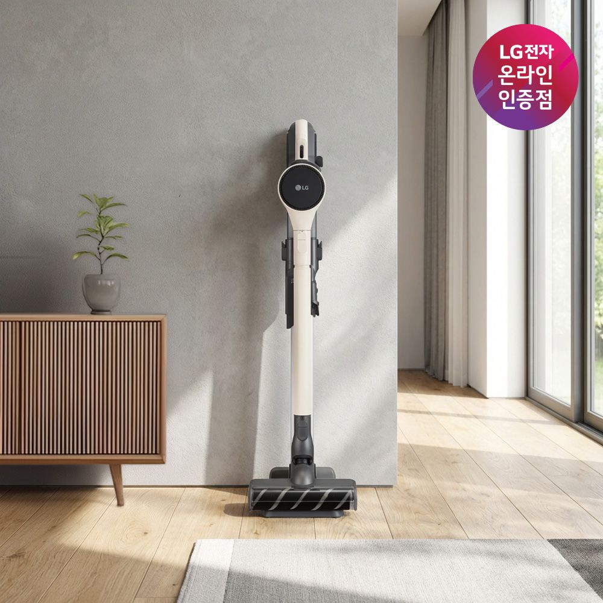

LG전자40만원대 슬림 스탠드후기 11개 · ★4.8
1. LG 코드제로 오브제컬렉션 A7 (AS720WA)
220W · 카밍 베이지 · 슬림 스탠드 충전 거치대 포함 (타워 미포함)
484,908원 기본배송 0원
- 크기·사양
- 슬림 자립 스탠드 거치형 / 흡입력 220W / 본체 약 2.47kg
- 우리 집 배치
- 현재 F안 3D에 들어간 스탠드형 청소기 모형과 가장 흡사합니다. 타워가 없어 책상 뒤 모서리나 선반 옆 어디에 두어도 가장 날렵합니다.
장점
- 40만원대 후반으로 구입 가능한 가장 저렴한 LG 오브제 무선청소기
- 간편 먼지비움 레버로 먼지통 내부 머리카락을 밀어냄
- 타워 부피와 먼지봉투 유지비가 없음
단점·확인점
- 자동 먼지비움 타워가 없어 먼지통을 직접 휴지통에 비워야 함
- 물걸레 흡입구는 별매